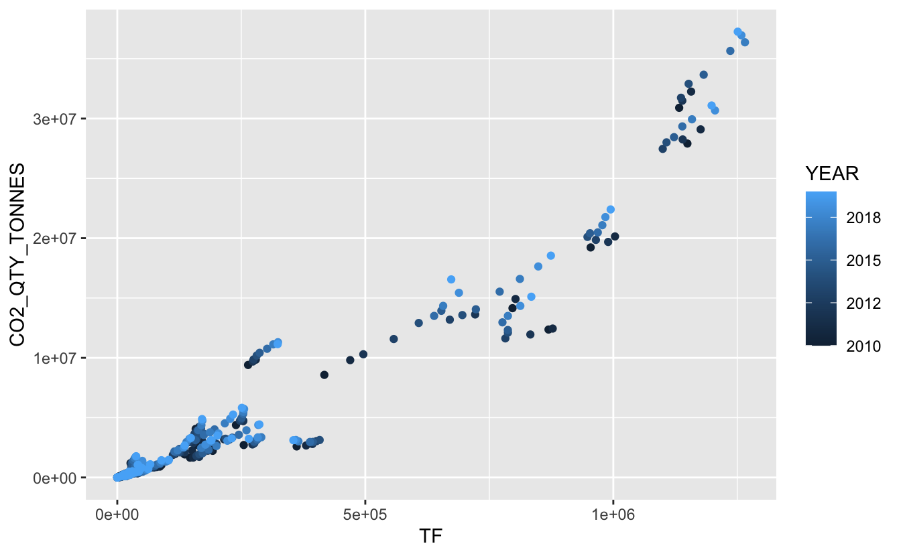
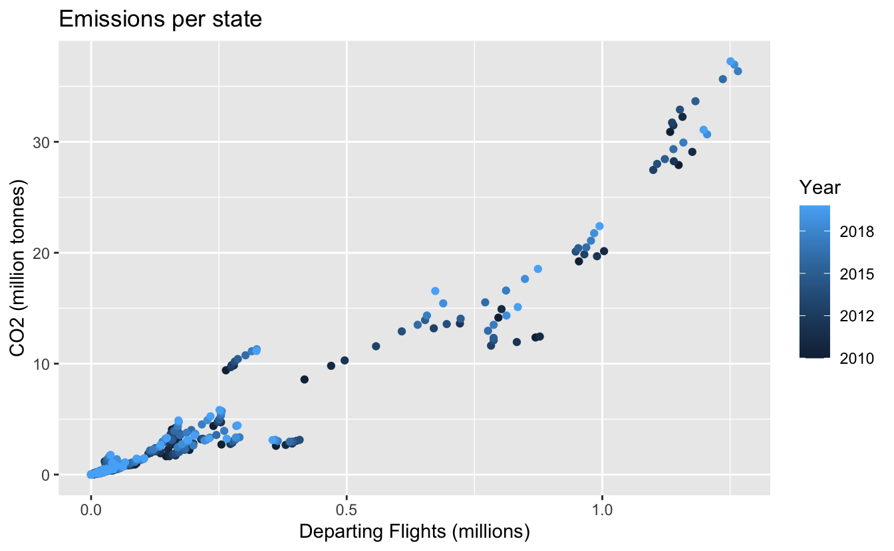
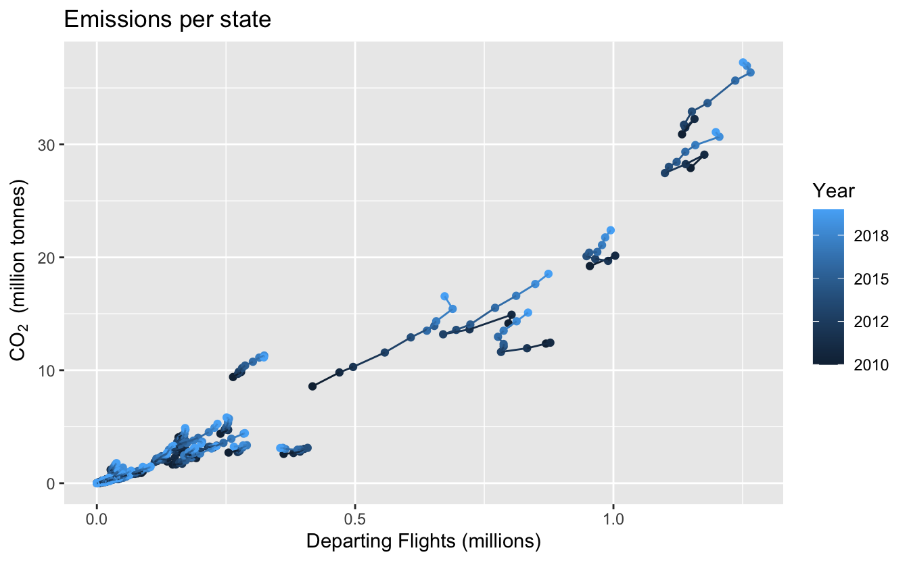

3 First look at data and CO2 emissions
It’s hard to get far in an analysis without first looking at the data to ask questions such as:
- What variables are there? Do I know what they all mean?
- What time period does it cover?
- Which countries, or airports etc, are included?
In this chapter, we introduce some of the ways to take a quick look at your data. We also introduce some data on CO2 emissions per European State from aviation.
| In this chapter, you’ll be introduced to: |
|---|
read_xlsx(), <-, summary, str, environment pane, View(), unique, head, c(), [], ggplot() |
Re-open your justlearning project (File:Recent Projects, or ‘justLearning.Rproj’). Create a new script file (File:New File:R script), to copy and paste the examples into, and save it as ‘chapter3’.
Although the project re-opens your datasets and scripts, it starts in a new R session. That means that you have to re-load the package(s) that you need, as in this code. So you might find it easier to have this at the start of your ‘chapter3’ script.
3.1 Looking at data: CO2 Data
We use public data on national CO2 emissions from aviation available on the EUROCONTROL/AIU website. We choose this, apart from the interest in the data themselves, because it’s a small set so quick to download, and it’s already tidy (each variable in one column). To isolate this book from changes in the original file, we use a version that we’ve saved to github.
We’ve already seen the function(parameter) way to call a function in the cos(pi/3) example. Now we have something <- function(parameter, parameter). This is a peculiarity of R that you just need to get used to. Think of it as saying: create something in the environment (without saying what it is just yet), then fill it (<-) with the results of the function(). While you might occasionally have used a function in Excel, for example, in R basically everything you do is call functions.
Now that the Excel data are downloaded, in your R script comment out the line download.files(..., because we don’t need to keep downloading if you happen to re-run the code. Comment means putting a # in front of it. Pressing shift-ctrl-C (shift-cmd-C on a Mac) does the same, and also works over many lines at once.
Notice that R doesn’t mind if a function is split over several lines. If there were frequent updates, maybe you would repeatedly download (so not comment out). See (TBD) for an example. [See the Excel, now in your project data folder, for disclaimer and details.]
International conventions mean that CO2 emissions are measured from flights departing airports in a state. read_xlsx automatically selects the first row as variable names.
One tool in the ‘explore your data’ toolbox is summary.
## YEAR MONTH STATE_NAME STATE_CODE
## Min. :2010 Min. : 1.00 Length:5694 Length:5694
## 1st Qu.:2012 1st Qu.: 3.25 Class :character Class :character
## Median :2015 Median : 6.00 Mode :character Mode :character
## Mean :2015 Mean : 6.50
## 3rd Qu.:2018 3rd Qu.: 9.00
## Max. :2020 Max. :12.00
## CO2_QTY_TONNES TF
## Min. : 0 Min. : 1
## 1st Qu.: 15665 1st Qu.: 1364
## Median : 84312 Median : 4605
## Mean : 336396 Mean : 16376
## 3rd Qu.: 279711 3rd Qu.: 17073
## Max. :3541111 Max. :120473The summary function is fairly basic, but it gives a quick feel for what’s in the data. Often more helpful with numeric than character variables, but also useful for spotting if there are missing values NA. So we can see there are no missing values here.
In this dataset we have:
- YEAR: An integer, not a date, but
read_xlsxreads this as a real number (ie potentially having decimals). - MONTH: An integer, giving the month in the year. Again, this has been assumed to be real rather than integer.
- STATE_NAME, STATE_CODE: A long name and the 2-letter ‘country code’ derived from the ICAO 4-letter communication address, of which the less said, the better.
- CO2_QTY_TONNES: Total annual CO2 emissions, in (metric) tonnes.
- TF: Total flights. This is departing flights. Flights through a state’s airspace that do not land are not counted, nor are arrivals from outside the state. A domestic flight is counted once, as a departure.
You’ll notice a few names in there which aren’t states, such as ‘Canaries’ which is counted separately from Spain. These measurements add up cleanly (this isn’t always true in flights data), so you can get the full ‘Spain’ by adding the two. There are also some States with a ’*’ next to their names, which means there’s a footnote elsewhere in the spreadsheet.
We want to keep things simple, so we will use a little data wrangling to aggregate to yearly totals for each country, then save the result as an R dataset, rather than an Excel file. These are some quite common step in data wrangling:
- Drop some variables. Here, just
selecteverything except thanSTATE_CODE. (Not is a very thin!, so easily overlooked.)3 - Summarise.
group_bythe relevant variables, then summarise within those groups. Here we use thesummarise_atvariant of summarise, which allows us quickly to apply a functionsumto multiple variables. - Drop some rows. There are few families and business unaffected by COVID-19. Aviation is of course no exception, and the data from 2020 are really an outlier for this reason. To keep things simple here, we omit 2020, using a
filterthat says ‘keep only the values before 2020’. Thegroup_byisn’t essential for the filter, but I think it’s probably faster as written here, since the grouping process has already found all of the year 2020 values.
Often you want to keep your groups, but here we don’t need to, so we ungroup at the end. Then we save the data into the data subdirectory of the project.
There will be more examples of this sort of data manipulation in Chapter 4, with more explanation of what’s happening. And a lot more when we turn to data wrangling in chapters ?? and 6.
There are three other important ways to explore the data. Firstly in the environment pane (top right, CTRL-8), where you can click the first line, with name on, to see a summary. You get much the same thing in the console by typing str(annual_co2) where str is for ‘structure’. You should see something like this.

We can see that there are three numeric variables (num) and two character variables (chr). All five variables have the same number of observations (437). In a tibble or dataframe the columns are always the same length.
The second way to explore the structure, because this is a tibble, is just to type its name in the console. [Try it] This is useful but just bear in mind that for some data structures, this might fill up your console with a lot of output. Save it for when you’re sure you’ve a tibble. You can check by typing class(my_thing) into the console to see if my_thing is a tibble (shown as tbl).
The third way gives a window to explore every observation. Click on the dataset name next to the blue arrow or type View(annual_co2) in the console (sorry about the upper case ‘V’, R is like that) and you get a tabular data explorer, which allows you to sort and filter. You should see something like this. [Try out the sorting and filtering in the view window. Filter to show only the Netherlands, and sort by total flights.]

3.2 Extracting variables
To answer more questions about the data there are some more tools to summarise the values that it takes. We saw summary() works for numeric values, but what about discrete ones?
There are several ways to pull one variable out of your data. We’ll use the $ notation, partly because there’s a reminder of this in the environment tab. [Where is this ‘reminder’?]
Look in the environment pane, state_vbl is listed under ‘Values’. It’s a (column) vector, one of the simple data types in R which is why it’s listed under ‘Values’ and not under ‘Data’. ‘Data’ is for more complex data structures, such as dataframes and tibbles. You’ve just pulled a column out of annual_co2 so not surprising that it has the same number of rows as annual_co2. And the first values are all ALBANIA, or were when this book was compiled.
Really we want to know how many different states there are, and which ones. unique does what it says, and we’ve saved these as states; a variable name which to me implies ‘unique states’. You can tell how many there are from the environment pane, or you could use length(states). [How many are there?]
To inspect all of these values you can just type states into the console, a good way to check the spelling of some, perhaps. [Try this. Is it ‘Canaries’ or ‘Canarias’?]
The order in which the elements are shown is as in the original data, there’s no re-ordering unless you ask for it. If you’ve worked with SAS PROC SQL or other languages, it might come as a relief to hear that, in R, the order of rows stays where it’s put until you say otherwise; none of this need to sort before every operation. We’ll see some ways to handle ‘top’ values later (section 4.3).
So in this case, even if the states are in alphabetical order, that’s just because the original Excel file was.
3.3 Extracting a few values
We’ve just seen how to pull a variable out of a tibble, as a vector. How do we extract one or more values out of the vector that we created?
The states are quite a lot to show in the console. Sometimes you just need to see a quick sample, eg to check if they’re in title case, or if they’re codes or names. head() is useful for showing you the first few (6 by default).
## [1] "ALBANIA" "ARMENIA" "AUSTRIA"
## [4] "BELGIUM" "BOSNIA AND HERZEGOVINA" "BULGARIA"If you want to pull out a single value, or a few of them, again there are multiple ways to do this, but the simplest is this. We show here two ways to select with a vector of numbers: creating a consecutive sequence of numbers (1:3); and creating a vector with an arbitrary selection (c(1, 5, 10)).
## [1] "ALBANIA"## [1] "AUSTRIA"## [1] "ALBANIA" "ARMENIA" "AUSTRIA"## [1] "ALBANIA" "BOSNIA AND HERZEGOVINA" "CZECHIA"We’ll deal with subsetting the whole dataset, rather than just a vector extracted from it, in the next chapter.
3.4 CO2 Scatter plot
It’s hard to beat a graph as a way to explore data. So we end the chapter exploring a simple graph. The tidyverse way of doing this is to use ggplot.
3.4.1 First draft
In the most basic scatter plot we have the following components, joined with a +. This + is peculiar to ggplot; another lovable quirk of R. Learn it, but get used to the idea that you’ll forget and use other conjunctions by mistake at times.
In the simplest code we have:
ggplot: with parameters the data to use, and an ‘aesthetic’aes;aes: gives the x and y first, and here also says choose colour based on year;geom_point: says to plot points with these data, ie a scatter plot.

Even this simple example illustrates that:
- a parameter to a function (here
ggplot) can be another function call (hereaes()); - we can specify parameters by position of appearance in the list (
xandyare first and second foraes) so we don’t have to name them, or we can specify a parameter by name (colour), or a mix of both (as long as the position ones come first!); geom_pointtakes its aesthetics by default from theggplotstatement. We’ll see later that you can add to or override this default (eg section 4.5).
There’s a (very) rough correlation along a diagonal line, but it would be interesting to know which states are above the line (more CO2 per flight) and which below. And is the change gradual, or is there much variability?
3.4.2 Improve the titles
Let’s at least label the axes so that someone else can see quickly what has been plotted. We can transform variables on the fly (using the rule that a parameter can be a function call, here to the function /), so let’s convert both axes to millions (1e6 means 1*10^6, so millions with less risk of getting the number of 0s wrong).
The label on the legend is meaningful, but to avoid the block capitals we can change that too within the labs() statement. It’s a ‘colour’ legend (that’s what is in the aes call), so you need to refer to ‘colour’ in the labs().

3.4.3 and with clustering by state
It’s tempting to read the graph as having a number of small clusters, each with flights and CO2 increasing with time, and assume that each of these corresponds to a single state. It would be nice to use the graph to see if that’s true.
There are too many countries to give each its own shape (we’ll see shapes used more effectively in section TBD), but we can easily add a line to join the points for each state. [Working from geom_point, how do you think you would add a line?]
We need both to add a line, which follows the pattern of geom_point, and group by state. That’s done in the same way that we coloured by year, in the aesthetics. There are several ways to plot a line. The most obvious one, having seen geom_point previously, is geom_line. However, this joins the points in x-axis order. We want data order, so that’s geom_path.
Out of a sense of neatness, we also add a subscript to CO2. The code bquote(~CO[2]~" (million tonnes)") took some googling and is cryptic, but it works!

The graph isn’t ready for a presentation yet, but a story is already emerging. The lines do a pretty good job of grouping the years for each state together. We see a graph with 6 busy states, 3 of which are fairly linear, so a relatively fixed CO2/flight. Three others are more variable from year to year.
Then there are two states, with flights in the 0.25-0.5 million flights range and that diverge from the main trend line, respectively higher and lower. The remaining, smaller states rather overlap in this graph.
We’ll find out how to pick out and label states in the next chapter.
3.5 What’s gone wrong?
Why do I get a message saying something like “could not find function …”? When you re-open RStudio, remember that it goes some of the way to restarting where you left off (opening files and loading datasets for you), but it opens in a new R ‘session’. That means that only the base packages are available. That’s why your R scripts usually start with a bunch of library() statements - you have to start by running these to get the packages back for this session.
It pays to looks closely at the graph and try to explain what you see. In fact, it was only once I’d tidied the colours up that I noticed that they were not in order along the line. I had used geom_line (join in x-axis order) in place of geom_path (join in data order). So story-telling can help debugging too. Also, it pays to read the help file, even if you think you know how the function works.
We’ll see more about grouping in later chapters. It’s quite common that I get errors in some tidyverse data wrangling, because the dataset is grouped, and I had forgotten that. So grouping is powerful and quick, but R remembers your groups longer than you do!
3.6 Test yourself
3.6.1 Questions
- Use
headto view the first 10 states. - Using the help file for
head, how would you display the last 6 states? - Which state names are followed by ’*’?
- Print the distinct state codes to the console.
- Print the 3rd, 23rd and 33rd state names to the console.
- What does
<-do? - In
ggplotwhat does+do?
3.6.2 Answers
head(states, 10)headis documented alongsidetail: usetail(states)- (In my version of the data), typing
statesinto the console, and by eye I see 4 states with a ’*’. We’ll see other ways to do this, later. unique(aviation_co2$STATE_CODE)states[c(3, 23, 33)]- It puts the results of whatever is on the right-hand side into the object on the left.
- It connects parts of the definition of a graph together.
In fact, this step is here just to illustrate the selection step. It’s not needed, as we’ll see in the data wrangling chapters, or you could test by removing it.↩︎